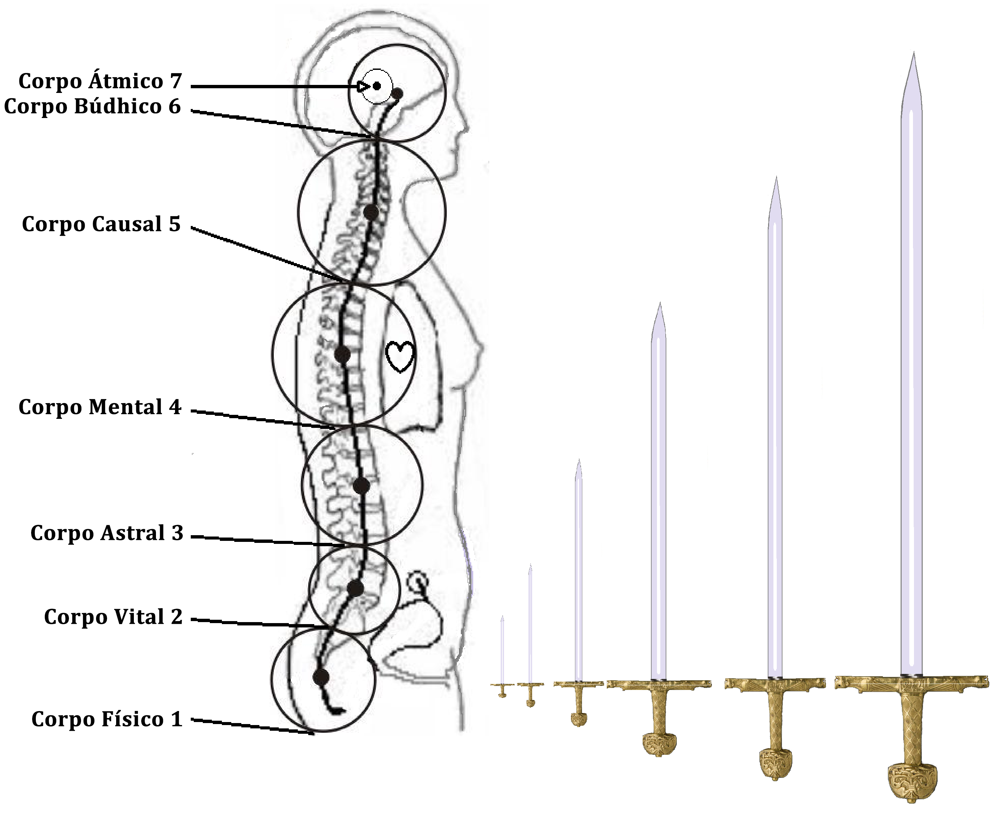

Conferência nº 11
COMO SE FABRICA ALMA E ESPÍRITO
O QUE É ALMA?
É um conjunto de virtudes, poderes, faculdades, forças, etc., que cada qual de nós tem latente na sua Essência contaminada nestes momentos. Na medida em que é liberada a Essência e fixada na medula espinhal ficam livres e despertam para servir a nossa Consciência.
Virtudes: porque cada um de nossos defeitos, que tem sido compreendido e eliminado, se transforma na virtude contrária ao defeito. Por exemplo: o defeito da traição se transmuta na virtude da fidelidade, do eu ladrão se transmuta na virtude da honradez, a ira em doçura, mansidão, a luxúria em castidade, etc., etc.
Poderes: porque na medida em que a Kundalini sobe pela nossa medula espinhal, criando cada um de nossos corpos, vamos recebendo uns poderes. Por exemplo: quando se cria o corpo Físico solar recebemos o poder de governar aos Gnomos e Pigmeus. Quando se cria o corpo Vital solar recebemos o poder de governar as Ondinas e Nereidas da Água. Quando se cria o corpo Astral solar podemos viajar em Corpo Astral à qualquer lugar ou astro, penetrar na quinta dimensão cada vez que desejamos, recebemos também o poder de governar as Salamandras do Fogo, etc., etc. Quando criamos o corpo Mental solar podemos entrar no mundo mental cada vez que seja necessário, entrar em contato com os Silfos e Sílfides do Ar e receber toda a sabedoria e o poder de governar toda a Natureza, e quando fica criado o corpo da Vontade solar nos permite criar até a nós mesmos.
Faculdades: porque em cada uma das Iniciações nos outorgam faculdades que se encontram latentes em todos os seres, porém que não as sabem manejar. Estas faculdades são: a clarividência, clariaudiência, polividência, ouvido mágico, pressentimento, telepatia, telemetria, intuição, faculdade de comunicar-nos com os elementais da natureza, etc., etc.
Forças: porque na medida em que se vai dando o desenvolvimento psíquico, todas essas forças vão se integrando entorno de nosso Ser e podemos fazer coisas que nem mil homens juntos as fariam.
COMO SE FABRICA A ALMA?
A Alma se fabrica trabalhando com os Três Fatores assim:
- Morte Psicológica: com a morte poupamos energia, equilibramos os centros e liberamos a Consciência presa no defeito.
- Nascimento Espiritual: criação dos Corpos Existenciais do Ser. Na união sexual de um homem e uma mulher, fazendo sábio uso de nossa Energia Criadora Sexual.
- Sacrifício pela Humanidade: entregando aos demais seres humanos este Conhecimento desinteressadamente (méritos do coração para o trabalho).
PASSOS PARA A FABRICAÇÃO DA ALMA HUMANA:
- Receber o Conhecimento Objetivo. “De mil que me buscam, um me encontra”.
- Começar a prática dos Três Fatores.
- Equilibrar os centros. “De mil que me encontram, um me segue”.
- Ter um cônjuge estável, pois é a Montanha do Nascimento.
- Voltear as Águas ou fazê-las ascender pela medula espinhal (não fornicar ao praticar).
- Receber a Espada de Prata.
- Fazer as Cinco Iniciações de Mistérios Maiores:
- Regeneração do corpo Físico Solar.
- Regeneração do corpo Vital Solar.
- Criação do corpo Astral Solar.
- Criação do corpo Mental Solar.
- Criação do corpo da Vontade Solar.
- Escolher o Caminho Direto ao iniciar a Quinta de Maiores. “De mil que me seguem, um é meu”.
- O Matrimônio Perfeito ou união da Alma Divina e a Alma Humana.
Quando terminamos a Quinta Iniciação ficamos convertidos em Homens Verdadeiros. Neste momento podemos dizer que temos Alma Humana.
A criação dos Cinco Corpos Solares se denomina a Primeira Montanha; o Ascenso do Fogo pela primeira vez desde o cóccix até a glândula pineal. Também se denomina fabricação da Alma Humana ou Genesis.
Cada Iniciação começa na metade dos dois centros e termina na metade dos dois centros
COMO SE FABRICA O ESPÍRITO?
Quando se unem as duas Almas, a Divina e a Humana, fica formada a Segunda Tríade que é:
Atman, Budhi e Manas; a essa Tríade se denomina o Espírito.
O desenvolvimento do Espírito se dá no Ascenso da Segunda Montanha.
Na Segunda Montanha se desenvolvem e terminam as Sete Igrejas e as Sete Consciências ou Sete Sabedorias.
PERGUNTAS:
Como se cria um Corpo? Um Corpo se cria equilibrando os cinco centros inferiores (como se viu na conferência dos Sete Centros). Com a poupança da energia na vida diária, mediante a morte psicológica e o investimento dessa poupança na transmutação sexual, vamos criando cada um de nossos corpos (como se viu na conferencia dos Sete Corpos).
Em quanto tempo se cria um Corpo? Um Corpo se cria em um tempo aproximado de dois anos e meio trabalhando com seriedade.
Em quanto tempo se cria a Alma? A Alma se cria aproximadamente em treze anos.
Como sabemos que já se iniciou o Trabalho? O Trabalho se inicia com a Castidade, é necessário compreender o eu fornicário para poder ascender pois este defeito impede qualquer avanço. Uma vez tenha morrido este agregado, recebemos no mundo interior uma pequena espada de prata com empunhadura branca. Cada fornicação nos faz perder duas vértebras.
Pode-se criar Corpos sem cônjuge? Não!! Fora do sexo não se pode criar nada. É necessário, antes de tudo, conseguir um(a) cônjuge que se encontre interessado(a) neste trabalho e que tenha amor ao trabalho sexual, pois este trabalho é muito sério e requer continuidade de propósitos.
Pode-se criar Alma estando castrado(a)? Não! Para poder criar Alma é necessário ter as glândulas sexuais em perfeitas condições, a castração é um delito contra o Espírito Santo, O Criador. Uma pessoa castrada não pode criar nada, teria que regenerar-se.
Em quanto tempo se pode fazer a Segunda Montanha? Para fazer a Segunda Montanha nos dão mil anos com o mesmo corpo físico ao tomar a decisão do Caminho Direto. Porém um Iniciado pode fazê-la em vinte anos trabalhando equilibradamente.
Por que de mil que buscam o Caminho somente um o encontra? Pelo karma. Muitos tem tido o Conhecimento e o tem abandonado, outros traem a Mãe Divina, outros têm cometido delito contra o Espírito Santo, outros são buscadores e não sabem nem o que buscam, e todos perderam o direito em recebê-lo por várias existências.
Por que de mil que o encontram só um o segue? Vejam, todos vocês já conhecem o que é que devem fazer, porém uma estranha força não os deixa começar o trabalho e se conformam com escutar as conferências. Durante algum tempo estarão tentando fazer algo, porém o eu da preguiça e sua personalidade os farão regressar a seus velhos hábitos. Se vocês fizessem um superesforço, ajudando aos demais, receberiam uma força que os impulsionaria para arrancar seriamente.
Por que de mil que o seguem somente um consegue? Quando se chega à escolha dos Caminhos 999 escolhem o Nirvana, traem o Cristo Íntimo por temor as dificuldades da Segunda Montanha e somente um decide pelo Absoluto. O Caminho do Nirvana não se deseja nem ao pior inimigo, pois se estabelece uma recorrência e esse Ser nunca eliminará de sua psique os Eus-Causa. Por tanto jamais se Auto-Realizará.